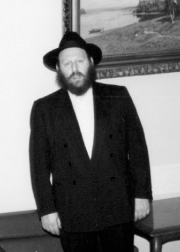

Tanya Adventures in Moscow
Another installment from the memoirs of R ’ Zalman Chanin about the special shlichus from the Rebbe , together with his friend R ’ Laibel Zajac, to print the Tanya in Russia. * R ’ Zalman tells how frightened his father was of the trip to Russia, about the welcome they got at the Russian hotel, the endless rounds they made in the attempt to find one heater in all of Moscow, and about the bottles of mashke that were exchanged for bottles of gasoline. * Part 3
Prepared for publication by Avrohom Rainitz

This instruction was a complete turnabout, since a few months earlier, when my friend Leibel Zajac had raised the idea of going to Russia, the Rebbe dismissed it out of hand. At that time, the Rebbe said that although the Iron Curtain had fallen, the government in Russia would not allow American citizens to come and print a Tanya in the street. Now, out of the blue, the Rebbe was telling us to go to Russia to print the Tanya, and not just in the street but in the military fortress in Leningrad!
We got right to work. In those days, one needed a visa to every city he wished to visit, and so we had to decide ahead of time which cities we wanted to go to. According to Russian law, we also had to order and pay in advance for rooms in hotels we would be staying in. The Russians know how to extract money from tourists, and every step of the way we had to part with significant sums.
Since we did not know precisely which cities we would be visiting, we asked for and obtained a visa to Moscow and its environs, and to Leningrad and its environs. This visa enabled us to visit all cities in a 20-30 kilometer radius of Moscow and Leningrad. We also requested a visa for Lubavitch.
We kept the Rebbe’s warning in mind that in Russia it is hard to obtain supplies, from printing paper to a teaspoon. We went on a grand shopping trip and bought anything we thought we might need during our two week stay in Russia.
MY FATHER SAID: DON’T YOU DARE CALL ME FROM THERE
When my father a”h heard that I was going to Russia, he was terribly frightened. He said to me: Do you know where you are going? The Chanin family is considered treif, and the minute they hear your name, they will arrest you! You just have to set one foot on Russian soil and they will immediately cart you off to prison!
I calmed him and said that since I was going on the Rebbe’s shlichus, I was utterly confident that no evil would befall me. But it was hard for him to relax and he warned me not to dare call him from Russia, not even to say hello. “You have no idea where you are going,” he said somberly.
Despite all my attempts at calming him, I could see the fear in my father’s eyes. He was literally ois mentch (completely discomposed). It was remarkable to see the fear the Russian government instilled in its citizens. Although decades had passed since he had left Russia, he was still sure that since he was on their black list and they had continued searching for him even after his escape, that they would vent their wrath on me and arrest me instead of him. He was absolutely convinced of this.
(At the beginning of the 50’s, when R’ Mendel Futerfas sat in jail in Russia under Stalin’s rule, in one of the interrogations they asked him where my father was. R’ Mendel said he did not know. He really had no idea, because my father was abroad and R’ Mendel was in jail for years already, so how could he be in touch with my father? The interrogator angrily said: Your Religion Minister (R’ Nissan Nemanov) and your Financial Minister (R’ Chaikel Chanin) slipped between our fingers and escaped. When we catch them, we will teach them a lesson …
Years later, when R’ Mendel arrived in the United States and told my father, my father was terribly frightened so that even thirty years later he was still scared).
But I wasn’t at all scared.
A RUSSIAN WELCOME
We took about ten suitcases with us and had to pay $8000 for our overweight bags! Upon arriving at the airport with all those suitcases, people looked at us like we were crazy.
When we arrived in Moscow, we were carefully examined, but they did not keep us in customs and they let us take in everything we had brought. Besides the things we needed for printing and food, we took twenty pairs of t’fillin and a lot of mezuzos.
R’ Zev Wagner welcomed us along with two fellows familiar with printing, who were responsible for the technical end of the printing job. He came with a big vehicle in which he loaded all our stuff and then drove us to the hotel.
The first authentic Russian welcome we received was when we arrived at the hotel. The clerk told us we had to leave our passports with him. This demand frightened me, because how could we go around Russia without a passport when the police constantly conducted identity checks? Even on the roads there were patrols that randomly stopped cars and all the passengers had to get out and let the police check the car and what it contained. Naturally, while “searching,” the police took whatever they could because they also needed to live … So go and travel in this country without a passport!
The clerk reassured me that this is the protocol, that every tourist must leave his passport in the hotel. In the event that he has to leave the hotel, on each floor sat someone in charge of the floor, available 24 hours a day, who would give the tourist his passport. Upon returning, the passport had to be relinquished once again.
We insisted that we were not going to leave our passports with them. This created an uproar and R’ Leibel said that in their office in New York they told him explicitly that after the overthrow of communism there was no need to give the passport to the clerk on the floor. We stood our ground and were given a room in the hotel even though we did not give up our passports.
FREEZING COLD
As soon as we put our belongings down in the hotel, we went out to the big vehicle in order to get started with printing the first Tanya. The fellows in charge of technical matters quickly assembled the mobile printing press, but we soon realized that in the Moscow cold it was no simple matter to print a Tanya on the street.
The snow that had accumulated did not disturb us while in the vehicle, but we could definitely feel the cold. We were dressed warmly and the minimal heat in the vehicle was enough so we did not feel uncomfortable, but the ink in the printing press froze. We could not begin working and had to look for a heater to warm up the vehicle so that the ink wouldn’t freeze.
Where would we get a heater? We took a taxi and went from store to store; mainly those designated for tourists where you pay in dollars and where you can usually buy everything. But at that time, after the revolution, the stores were empty. We were willing to pay top dollar, but when there is nothing to buy, that’s that.
I was reminded of all the descriptions I had heard from my father about the long lines for bread and other basic necessities. I thought of those great Chassidim who stood for hours on line for bread until they were killed by a goy who threw them off the line in a murderous rage. Seeing is more powerful than hearing, and as much as I imagined it, there was no comparison to the reality I experienced on that visit to Moscow. For anything I wanted to buy, I had to stand on line, sometimes for hours. If that was the situation in Moscow in the 90’s, what could one expect of the nightmare under Stalin?
The situation in Russia was awful. There wasn’t enough bread and even water was hard to get, because the water in the faucets was polluted, especially after the Chernobyl disaster. All over the hotel were posted sings warning not to drink the water until after boiling it. So, wherever they sold anything, there was a long line.
That reminds me; when we walked down the street we passed a fruit and vegetable market where I saw some nice strawberries for sale. To my great surprise, there was no line. I thought of buying some strawberries and giving them to the printing team. I was sure that they would enjoy eating them, in the middle of a Moscow winter no less.
R’ Wagner was walking with me and when I told him that I wanted to buy the strawberries, he took a small gadget from his pocket and checked them. He began to laugh and said: Do you know where these strawberries are from? From the Chernobyl area and they are containing nuclear fallout which is why they look so nice. You could figure out for yourself that if there is no line, it’s because people know it’s dangerous to buy these fruits and only ignorant tourists would buy them.
It was only after several hours of running here and there that we found a used heater. The store owner felt bad for us and agreed to sell it to us. Boruch Hashem, it heated up the vehicle enough so that the ink was no longer frozen and we could begin to work. Toward evening we had finished printing the first Tanya on the street of Moscow.
We were thrilled. After all the aggravation we had done it, even printing a complete book. We knew we were on the right track.
STANDING ON LINE
FOR HOURS
In the meantime, we tried getting permission to print the Tanya in the Peter and Paul fortress, Petropavlovskaya Krepost in Leningrad, where the Alter Rebbe had been incarcerated, as the Rebbe had asked.
Before we left, the Rebbe gave us eighteen dollars for us to give to tz’daka in Russia. Despite the practice of holding on to the bills received from the Rebbe and giving other bills to tz’daka, in this case the Rebbe told us to take these very dollar bills and exchange them in a bank. The Rebbe emphasized that we needed to change the dollars for rubles in an official way, and then give the rubles to tz’daka.
As I said, on our first day in Russia, I went with the printers to arrange the mobile printing press and we printed the first Tanya. As we did so, R’ Leibel went to the bank to change the dollars for rubles.
I think they told us that in only three places in Moscow could we officially exchange our dollars for rubles. One of them was the central bank of Moscow. After davening that morning, R’ Leibel went to the bank with R’ Zev and of course they had to stand in a long line. After waiting two hours, they finally reached the clerk but when he gave her the eighteen dollars, she said she did not have so much money in the register!
To the best of my memory, the exchange rate at the time was between five and six thousand rubles to the dollar and she did not have that many rubles. She told R’ Leibel to come back the next day in the afternoon, because that is when they would be getting a cash delivery and she would be able to exchange his dollars.
The next day, R’ Leibel went back to the bank. He waited on line for two hours or more and when it was his turn, he was told the same thing as the day before! We don’t have enough rubles, come back tomorrow.
On the third day, after waiting for hours on line, he finally got the rubles in exchange for the dollars and we began giving out the money to tz’daka to the mosdos that existed at the time.
Those who come from a Western country find it hard to believe that life could be this way. To have to stand on line for three days and waste all that time in order to exchange $18! We could have spared ourselves the experience if we had exchanged the money on the black market, but as Chassidim, that did not occur to us and we did what the Rebbe said. We don’t know what the heavenly calculations might be, but apparently it was important that we officially change the Rebbe’s dollars so that they would enter the Russian government’s coffers. We saw how matters of k’dusha are attained with great difficulty.
A LITER OF VODKA
FOR A LITER OF GAS
Another difficulty we had to contend with was the shortage of gasoline. We needed a huge amount – for the vehicle as well as for the generator that supplied electricity for the printing press. In order to obtain a few liters of gas one had to stand for hours on line. R’ Zev came up with an idea. He found some bachurim who volunteered to help us. They stood on line with a container and they brought us a few liters of gas every day. But it wasn’t enough. The vehicle and the generator guzzled the gas and it was hard to continue working that way.
Hashem sent us someone who gave good advice. He said to bribe those selling the gasoline with vodka. We bought a lot of vodka on the black market where it is plentiful, since one can’t live in Russia without vodka. We took vodka and told the gasoline sellers that for every liter of gas they sold us, we would give them a liter of vodka.
This ingenious idea worked better than we anticipated. Nobody refused our request and they gave us plenty of gas.
The boxes of vodka also opened other doors. At first, when we printed on the street, we had to use the generator’s electricity. It made a huge noise and attracted the attention of all the passersby. We did not want to attract undo attention and so we came up with the following idea. When we stopped on the street to print a Tanya, we knocked on the nearest door and made the owner an offer: he would supply us with electricity and we would give him a bottle of vodka. Nobody refused this generous offer. This arrangement made life easier for us and we were able to print more Tanyas per day.
That is when I understood the saying, “great is the power of a gulp.” It seems that within the seventy facets of Torah, this is one of them.
About the continuation of our mission and the printing of the Tanya in the Rebbe’s apartment and in the fortress in Leningrad – find out all about it in the next installment.
Beis Moshiach (staff). "Tanya Adventures in Moscow." Beis Moshiach, no. 896 (October 4, 2013).